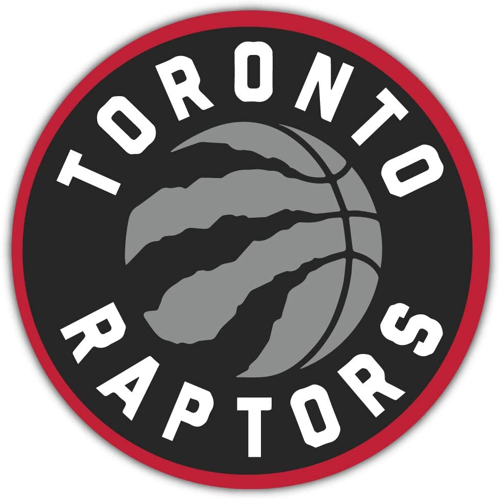
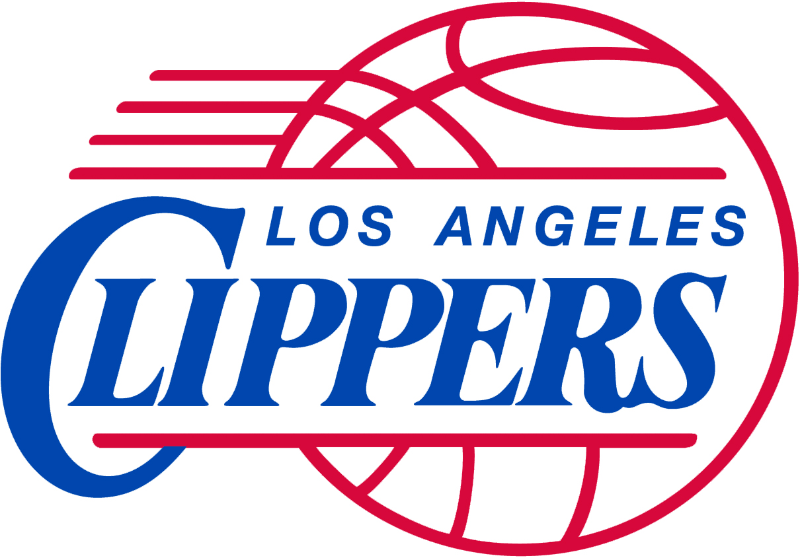
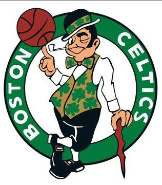

Best NBA Teams
- Los Angeles Lakers
- Toronto Raptors 
- LA Clippers 
- Boston Celtics 
- Miami Heat

Los Angeles Lakers, American professional basketball team based in Los Angeles. The Lakers are one of the most successful and popular professional franchises in all American sports. The franchise has won a combined 17 Basketball Association of America (BAA) and National Basketball Association (NBA) titles, tied in league history with their rival the Boston Celtics. The franchise that would become the Lakers was founded in 1946 as the Detroit Gems and played in the National Basketball League (NBL). The team moved to Minneapolis, Minnesota, in 1947, and its name was changed to the Lakers to reflect the Minnesota state nickname, “Land of 10,000 Lakes.” That same year the Lakers acquired George Mikan, who became professional basketball’s first dominant “big man” and the first in a series of great Laker centres. The Lakers joined the BAA (the official precursor of the NBA) for the 1948–49 season and won the final BAA championship. The NBA was formed in 1949, and Mikan and the Lakers—which also featured future Hall of Famers Jim Pollard, Slater Martin, Vern Mikkelsen, and (from 1953) Clyde Lovellette—won four of the first five league titles, establishing professional basketball’s first dynasty. Attendance at Lakers games fell after Mikan’s retirement in 1956, and the team moved to Los Angeles before the 1960–61 season. The Lakers advanced to the NBA finals six times in the 1960s but lost to the Celtics in each appearance despite the presence of all-time greats Elgin Baylor and Jerry West (who would later assemble a number of Lakers championship teams as the team’s general manager). During the 1971–72 season, however, the Lakers—led by West, Gail Goodrich, and Wilt Chamberlain—set NBA records for longest winning streak (33 games) and best regular season record (69–13; broken in the 1995–96 season by the Chicago Bulls) on their way to the NBA championship, the team’s first title since relocating to Los Angeles. The Lakers again reached the finals in 1972–73 but lost to the New York Knicks. After that season Chamberlain retired, and the team’s fortunes took a turn for the worse as the Lakers missed the playoffs in consecutive seasons for the first time in franchise history in 1974–75 and 1975–76. Click for more information on Los Angeles Lakers
Toronto Raptors, Canadian professional basketball team based in Toronto that plays in the Eastern Conference of the National Basketball Association (NBA). The Raptors have won one conference title and one NBA championship (both 2019). The Raptors joined the NBA in 1995 as an expansion team alongside the Western Conference’s Vancouver Grizzlies. The two expansion teams were the first NBA franchises based in Canada. (An earlier team, the Toronto Huskies, played in the Basketball Association of America—one of the forerunners of the NBA—during the 1946–47 season.) The Raptors finished in last place in their division in each of their first three seasons in the league. Toronto acquired its first superstar, guard-forward Vince Carter, in a 1998 draft-day trade. A five-time All-Star for Toronto, Carter helped the franchise reach its first playoff berth, during the 1999–2000 season. In 2000–01 the Raptors again qualified for the postseason and advanced to the conference semifinals, a dramatic seven-game loss to the eventual conference champion, the Philadelphia 76ers. After a winning campaign that ended in a first-round postseason elimination in 2001–02, Toronto entered into a four-year stretch of losing seasons, which was marked by the trade of the disgruntled Carter in 2004. The Raptors returned to the postseason in 2006–07, with a team featuring standout centre-forward Chris Bosh, but were knocked out in the opening round of the playoffs in both that season and the following, and the franchise subsequently failed to post winning records. In 2010 Bosh left the team in free agency, prolonging the rebuilding process. The 2013–14 season saw the team stage a stunning turnaround as it rebounded from a last-place divisional finish the previous season to win the second division title in team history. The Raptors won another division crown in 2014–15, but the team was swept out of the postseason in its opening-round series. In 2015–16 Toronto, led by All-Star guards Kyle Lowry and DeMar DeRozan, won 56 games and advanced to the Eastern Conference finals for the first time in team history, where the Raptors were eliminated by the Cleveland Cavaliers. The Raptors earned a franchise-record fourth straight playoff appearance in 2016–17 but were swept by the Cavaliers in the teams’ second-round postseason series. In 2017–18 the Raptors set a team record with 59 victories and had the best record in the Eastern Conference for the first time in franchise history. Despite Toronto’s stellar regular-season performance, the team once again faltered against the Cavaliers in the playoffs, losing all four games of the teams’ second-round series. Click for more information on Toronto Raptors
Los Angeles Clippers, American professional basketball team based in Los Angeles that plays in the Western Conference of the National Basketball Association (NBA). The franchise was originally based in Buffalo, New York, and was known as the Buffalo Braves upon joining the NBA in 1970 alongside fellow expansion teams Cleveland Cavaliers and Portland Trail Blazers. The Braves posted losing records in each of their first three seasons before running off three consecutive winning campaigns that also resulted in postseason berths behind the standout play of guard-forward Randy Smith and future Hall of Fame centre-forward Bob McAdoo. The Braves were part of an unusual franchise swap in 1978, when the owner of the Boston Celtics, Irv Levin, a Californian, wanted to move the Celtics to his home state but was prevented by the NBA from moving the historic franchise. As a compromise, the owner of the Braves, John Y. Brown, traded franchises with Levin, who relocated his new team to San Diego for the 1978–79 season. Then known as the San Diego Clippers, the franchise was one of the worst teams in the league during its six-year stay in the city, finishing in either last or second-to-last place in each season. In 1981 the Clippers were sold to Donald Sterling, a Los Angeles-based real estate mogul, who moved the team to his home city in 1984. The team did not fare any better in its new home, finishing with a losing record in each season from 1984–85 to 1990–91. In 1991–92 the Clippers, led by forward Danny Manning, posted a 45–37 record and advanced to the Western Conference playoffs, where they lost in their first-round series. Following a .500 regular season the next year, the team again lost its opening postseason series. The Clippers returned to their losing ways in 1993–94, which began a stretch in which the team placed last in its division eight times in 11 seasons through 2003–04. Click for more information on LA Clippers
Boston Celtics, American professional basketball team based in Boston, Massachusetts. One of the most successful franchises in sports history, the Celtics won 11 of 13 National Basketball Association (NBA) championships from 1957 to 1969. Overall, they have won 17 NBA titles. Founded in Boston in 1946 by Walter Brown, the Celtics were charter members of the Basketball Association of America, a forerunner of the NBA (established in 1949). At the time of the team’s founding, Brown also managed the Boston Garden, on whose distinctive parquet court the green-and-white-clad Celtics thrived until the franchise moved to a new arena, now known as TD Garden, in 1995–96. The team posted a losing record in each of its first four seasons, which prompted the hiring of head coach Red Auerbach in 1950. The Celtics’ run as a sports dynasty began in the mid-1950s under Auerbach, who later served as the team’s general manager and president. The team won its first title in the 1956–57 season after defeating the St. Louis Hawks in a closely contested final series, which included a double-overtime deciding seventh game. With a lineup of Hall of Famers that included Frank Ramsey, Ed Macauley, Bill Sharman, ball-handling wizard Bob Cousy, Tom Heinsohn, dominating centre Bill Russell (five times the league’s Most Valuable Player), and later Sam Jones, K.C. Jones, and John Havlicek, the “Celts” won eight consecutive NBA titles between 1958–59 and 1965–66—a record for the four major North American team sports—and triumphed again in 1967–68 and 1968–69. Click for more information on Boston Celtics
Miami Heat, American professional basketball team based in Miami that plays in the Eastern Conference of the National Basketball Association (NBA). The Heat have won three NBA championships (2006, 2012, and 2013). The Heat, along with the Charlotte Hornets, entered the league in 1988 as an expansion team. Miami won just 15 games in its first season but improved on its record in each of the next three seasons, culminating in a play-off berth (albeit with only a 38–44 regular-season mark) in 1991–92. The Heat were swept by the eventual-champion Chicago Bulls in the first round of the postseason and returned to the play-offs in 1993–94, only to again lose (to the Atlanta Hawks) in the first postseason series. In 1995 future Hall of Fame head coach Pat Riley took charge of the Heat. In just his second season with Miami, Riley guided a team featuring All-Stars Alonzo Mourning and Tim Hardaway to a surprising 61–21 record and a division title. In the 1996–97 postseason the Heat defeated the Orlando Magic and the New York Knicks in the first two rounds of postseason play, with the series against the Knicks including a notorious bench-clearing brawl in game five that marked the beginning of a fierce rivalry between the two franchises. The Heat’s play-off run in 1997 ended in the Eastern Conference finals, where the team lost to the Chicago Bulls. Click for more information on Miami Heats